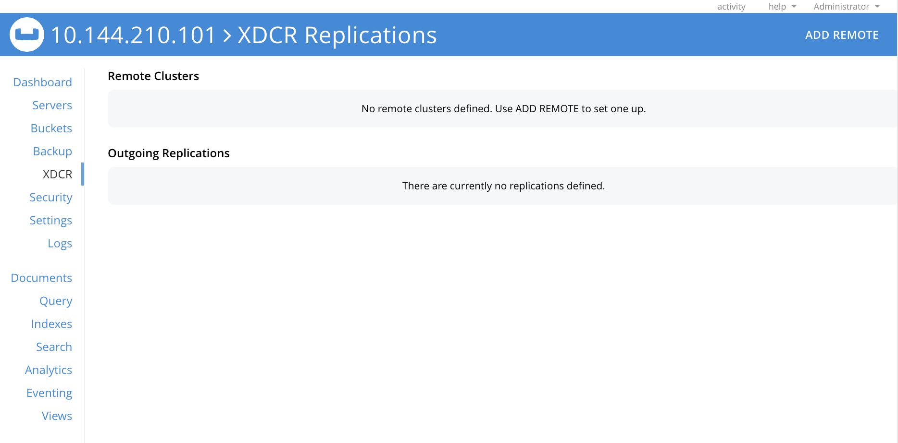
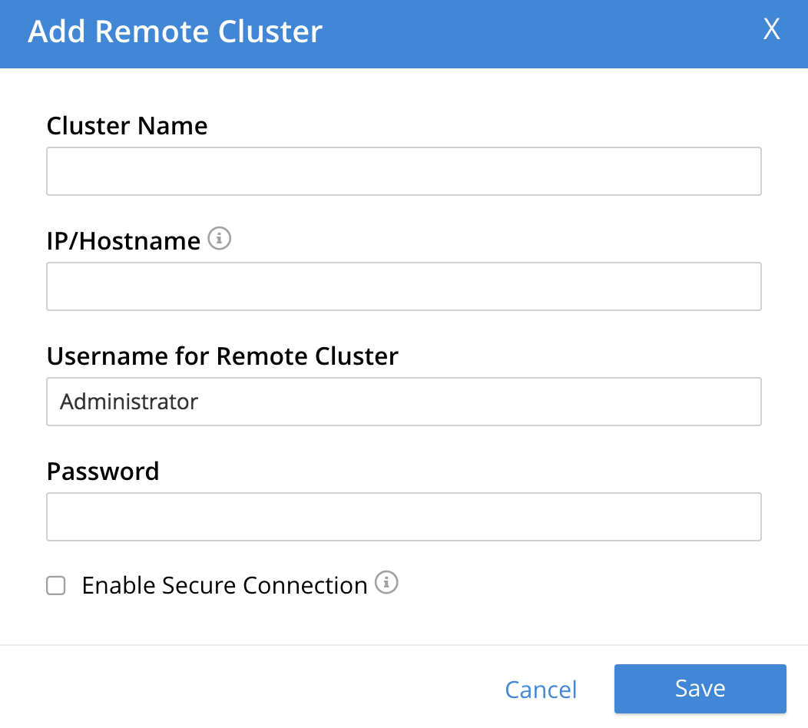
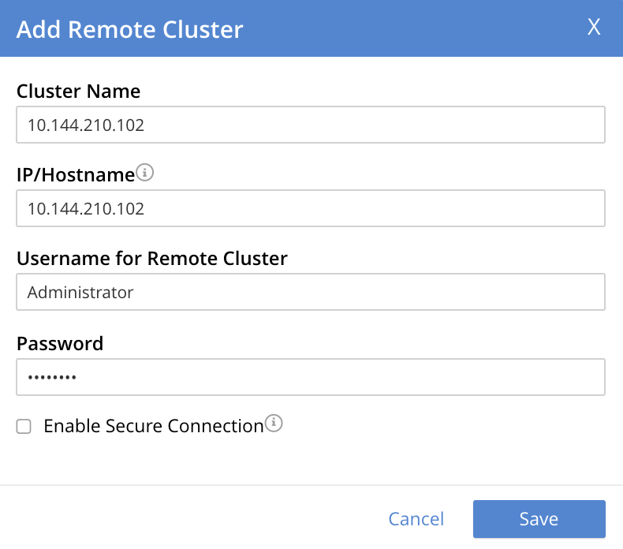
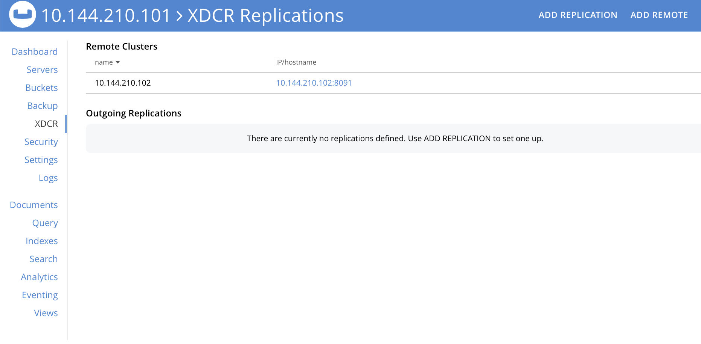

Create a Reference
To perform Cross Datacenter Replication (XDCR), you start by creating a reference to the target cluster and bucket that will receive the replicated data.
Understanding References
A reference is the registration, on the local cluster, of details that identify a target cluster for XDCR replication. The reference must contain the following details:
-
The name of the target cluster.
-
The IP address or hostname of a node within the target cluster. IPv4 and IPv6 both can be used: however, a valid IPv6 address must be enclosed within brackets (
[and]). Note that if the target cluster has an alternate address, this address can be used to identify the target cluster. See Alternate Addresses. -
A username and password, associated on the target cluster with a role that allows one or more buckets to receive documents from an XDCR replication. The possible roles are Full, and XDCR Inbound (either for the individual bucket that will later be specified as the target bucket for the replication, or for all buckets on the target cluster).
Note that the administrator setting up XDCR must have the Full Admin, Cluster Admin or XDCR Admin role, on the source cluster.
-
Whether the the connection between source and target clusters will be managed securely, and if so, by what secure methodology. Corresponding TLS certificates may need to be provided. Securing a connection is described in detail in Secure a Replication.
Once the reference has been saved, it can be used to specify a target cluster, when an XDCR replication is created.
Examples on This Page
The examples in the subsections below show how to create the same reference; using the UI, the CLI, and the REST API respectively. The examples assume:
-
Two clusters already exist; each containing a single node. These are named after their IP addresses:
10.144.210.101and10.144.210.102. -
Each cluster contains a single bucket, which is the
travel-samplebucket. To access and install this, see Sample Buckets. -
Each cluster has the Full Administrator username of
Administrator, and password ofpassword.
Choosing a Target Bucket
Since XDCR requires specification of a bucket on the target cluster, to which data is to be replicated, prior to creating a reference to a target cluster, you must know either:
-
The name of the existing target bucket to which data will be replicated
-
That you have the ability to create a target bucket to which data will be replicated.
The examples on this page use the travel-sample bucket, whose installation is described in Sample Buckets.
For information on listing and creating additional buckets, see Manage Buckets.
For information on replicating between the scopes and collections within specified buckets, see Replicate Using Scopes and Collections.
Create an XDCR Reference with the UI
Proceed as follows:
-
Access Couchbase Web Console. Left-click on the XDCR tab, in the left-hand navigation menu.

This displays the XDCR Replications screen:
The upper part of the main panel is entitled Remote Clusters. The list, which is designed to show the name and IP address or hostname of each registered remote cluster, is currently empty, and so bears the notification
No cluster references defined. Use ADD REMOTE to set one up. -
Define a reference, by left-clicking on the ADD REMOTE button, at the upper right.
The Add Remote Cluster dialog is now displayed:
The fields in this dialog are explained above, in Understanding References.
-
For Cluster Name, provide a name for the target cluster: this name is for use on the source cluster only, and so need not be identical to any name defined on the target cluster. For IP/Hostname, specify the IP address (if appropriate, the alternate address), the hostname, or the fully qualified domain-name of the target cluster: in this case, the IP address
10.144.210.102is to be used. (Note that if the IPv6 address family were being used, the IP address would need to be enclosed in square brackets.) For Username and Password, specify those stated above. Do not, for the current example, check theEnable Secure Connectioncheckbox. The complete dialog appears as follows:When you have entered the data, left-click on the Save button.
The XDCR Replications screen is again displayed:
The Remote Clusters panel now contains the reference you have defined. A new panel, entitled Outgoing Replications, appears immediately below the Remote Clusters panel. It is currently empty, except for a notification explaining that no replications are yet defined. Note that at the upper right of the XDCR Replications screen, a new tab has appeared, which is ADD REPLICATION.
This concludes reference-definition.
Editing and Deleting References with the UI
By left-clicking on the row for a particular, defined reference, buttons for editing and deleting the reference are displayed:
Now, by left-clicking on the Edit and Delete buttons themselves, you can respectively edit (by means of the Edit Remote Cluster dialog, which is identical to the Add Remote Cluster dialog) and delete defined references. Note that if a reference is already associated with a replication, you cannot delete the reference; nor can you modify its target IP address. However, you can change the registered name of the target cluster, and you can change the security settings for the replication.
Create an XDCR Reference with the CLI
Starting from the scenario defined above, in Examples on This Page, use the CLI xdcr-setup command to create an XDCR reference, as follows:
couchbase-cli xdcr-setup -c 10.144.210.101 -u Administrator \ -p password \ --create \ --xdcr-cluster-name 10.144.210.102 \ --xdcr-hostname 10.144.210.102 \ --xdcr-username Administrator \ --xdcr-password password
If successful, this provides the following response:
SUCCESS: Cluster reference created
Note that a complete list of references established for a cluster can be retrieved with the xdcr-setup command, used with the list option:
couchbase-cli xdcr-setup -c 10.144.210.101 \ -u Administrator -p password --list
The following is returned.
Note the uuid associated with the reference, which will be used later in the current section.
cluster name: 10.144.210.102
uuid: 82026f90f5f573b5e50ec8b7a7012ab1
host name: 10.144.210.102:8091
user name: Administrator
uri: /pools/default/remoteClusters/10.144.210.102
For more information, see the complete reference for the xdcr-setup command, which includes details on how to edit an existing reference.
Create an XDCR Reference with the REST API
Starting from the scenario defined above, in Examples on This Page, using the REST API’s POST /pools/default/remoteClusters HTTP method and URI, create an XDCR reference as follows:
curl -X POST -u Administrator:password \ http://10.144.210.101:8091/pools/default/remoteClusters \ -d username=Administrator \ -d password=password \ -d hostname=10.144.210.102 \ -d name=10.144.210.102 \ -d demandEncryption=0
The output, if formatted, is as follows;
{
"deleted": false,
"hostname": "10.144.210.102:8091",
"name": "10.144.210.102",
"secureType": "none",
"uri": "/pools/default/remoteClusters/10.144.210.102",
"username": "Administrator",
"uuid": "82026f90f5f573b5e50ec8b7a7012ab1",
"validateURI": "/pools/default/remoteClusters/10.144.210.102?just_validate=1"
}
To return a list of the cluster’s current references, use the method as follows:
curl -i -X GET -u Administrator:password \ http://10.144.210.101:8091/pools/default/remoteClusters
Formatted, the output is as follows:
{
"deleted": false,
"hostname": "10.144.210.102:8091",
"name": "10.144.210.102",
"secureType": "none",
"uri": "/pools/default/remoteClusters/10.144.210.102",
"username": "Administrator",
"uuid": "82026f90f5f573b5e50ec8b7a7012ab1",
"validateURI": "/pools/default/remoteClusters/10.144.210.102?just_validate=1"
}
Next Steps
Once a reference to a target cluster has been defined, you can Create a Replication.